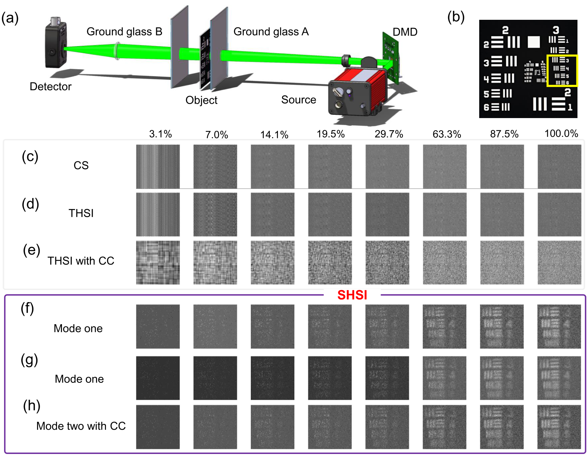

Our image-free segmentation is more robust to measurement noise than the tested reconstruct-then-segment baselines when models are trained on clean data.
Yuyuan Han 韩聿源
Computational imaging & physics-aware learning
PhD student
Xi'an Jiaotong University
Visiting PhD student
Politecnico di Milano
Learning to sense the physical world
I study how measurement physics can help learning systems perceive the physical world. My research connects optical measurement design with learned representations for image reconstruction and image-free perception. I am now exploring acquisition-aware learning and interfaces between optical signals and pretrained multimodal models. My long-term goal is to build sensing systems that learn what to measure next.
I welcome research collaborations and research internship opportunities in computational imaging, physics-aware machine learning, and multimodal sensing.
Selected research
More publications

Tunable-sparsity Hadamard illumination for noise-resilient single-pixel imaging, supported by theory and optical experiments.

A loop differential ghost-imaging algorithm for line-pattern illumination from one-dimensional optical phased arrays.
Current directions
Learning with acquisition physics
I am developing models that incorporate how signals are acquired, and studying how learned representations behave when acquisition conditions change.
Connecting optical signals and pretrained models
I am adapting pretrained multimodal models to bucket-detector signals, exploring how prior visual knowledge can support inference directly from measurements.
Time-domain diffuse optics and 3D reconstruction
Planned studyDuring my current visit at Politecnico di Milano, I plan to investigate light-transport modeling and learning-based inversion for three-dimensional reconstruction.
Longer term, I aim to develop perception that helps a system decide what to measure next and learn through interaction with the physical world.
More publications
3 featured above
IEEE Transactions on Image Processing · 35 · 9314–9326 · 2026
PaperNanophotonics · 15(14) · e70182 · 2026
PaperOptics and Lasers in Engineering · 184 · 108617 · 2025
PaperMeasurement Science and Technology · 36(6) · 065409 · 2025
PaperApplied Sciences · 14(8) · 3414 · 2024
PaperActa Optica Sinica · 43(7) · 0711001 · 2023
Paper
Background
Education
Xi'an Jiaotong University
PhD student · Electronic Science and Technology · Master’s-to-PhD track
2022 - present
Northwest University
B.Eng. · Electronic Information Science and Technology
2018 - 2022
Research appointments
Politecnico di Milano
Visiting PhD student
Department of Physics
Host: Antonio Pifferi
Oct 2026 - present
Additional experience
Photonic device modeling · Modeled and optimized electro-optic phased-array geometries for beam steering.
Optical system integration · Led mechanical design, optical alignment and system integration; participated in underwater field tests.
Award
- Second Prize, National Post-Graduate Mathematical Contest in Modeling2024
Research code
Comparison-of-SPI-DLs
Comparative evaluation of learning-based single-pixel reconstruction.
remote-gpu-trainer
Agent skill for remote GPU experiment workflows.